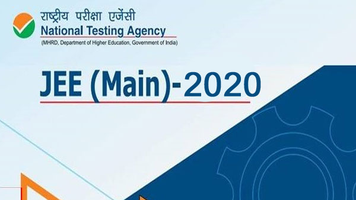

Engineering Entrance Exams
Joint Entrance Exam Main (JEE Mains)
The Joint Entrance Examination (JEE) Main is a national level entrance examination that will be conducted by the National Testing Agency (NTA). Previously, the exam was conducted by CBSE once a year. But from 2019, the exam is being conducted twice a year - January and April. In another change, the exam is now conducted in computer based mode (except the drawing section of Paper 2 (B.Arch) which is a pen and paper based exam). JEE Main is the admission procedure into the well-known IIITs, NITs and other more prestigious engineering institutes of the nation. More than 12 lakh applicants appear for this examination hoping to clear and reach JEE Advanced for admissions. The duration of the exam is 3 hours long and is multiple choice in nature. The examination is divided into two papers – Paper 1 is for B.Tech/B.E and Paper 2 is for B.Arch or B.Planning.

Birla Institute of Technology and Science Admission Test (BITSAT)
The Birla Institute of Technology and Science (BITS) conducts their University level engineering entrance examination every year for new admissions. BITSAT (Birla Institute of Technology and Science Admission Test) offers admission to all eligible applicants into the three campuses of BITS. Around 2 lakh applicants appear for this examination every year making it a very sought after the entrance exam. The duration of the online examination is 3 hours and the objective based question paper is divided into four sections – Physics, Chemistry, English Proficiency and Logical Reasoning and finally Mathematics. Around 2,000 seats are available for admission.
Vellore Institute of Technology Engineering Entrance Exams (VITEEE)
Around 5000 undergraduate engineering seats are available for eligible applicants under VITEEE (VIT Engineering Entrance Exam). The VIT University conducts the University level examination and around 2 lakh students appear for it every year. The mode of examination is online and will be objective in nature. Within the duration of 2½ hours, the applicants will have to solve 125 questions from Physics, Mathematics, Chemistry, Aptitude and English sections.
Manipal Academy of Higher Education Engineering Test (MET)

Manipal Academy of Higher Education (earlier known as Manipal University) is responsible for conducting the annual online entrance examination for admissions into the institute. The Manipal Entrance Test (MET), previously known as MU OET, is a University level examination which bring in over 50,000 applicants per year. Admissions are provided in 16 engineering courses through MU OET and is open to all eligible applicants. The entrance exam is held in online mode and is 150 minutes long. The questions are objective multiple choice ones and the applicants will have to qualify this examination for admission into the institute.
Amrita Engineering Entrance Exam (AEEE)

AEEE is a national level entrance exam organized by Amrita Vishwa Vidyapeetham University every year for admitting aspirants into various undergraduate engineering programs offered in its 6 campuses - Amritapuri, Bengaluru, Kochi, Mysuru, Coimbatore and Chennai.